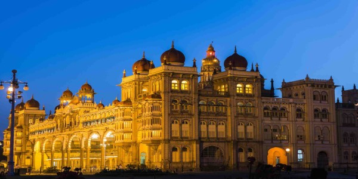
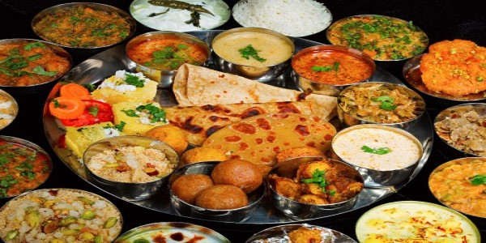
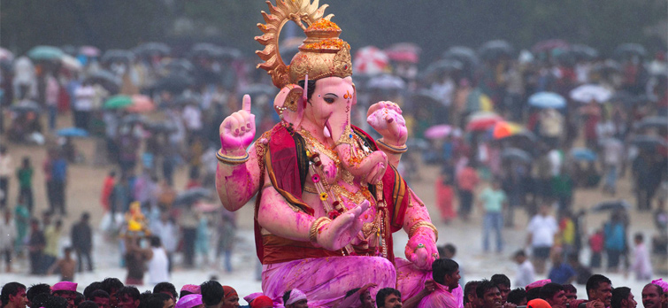
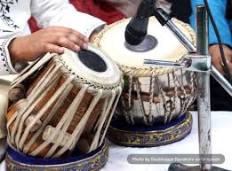
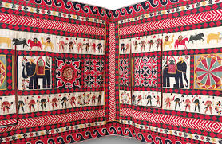
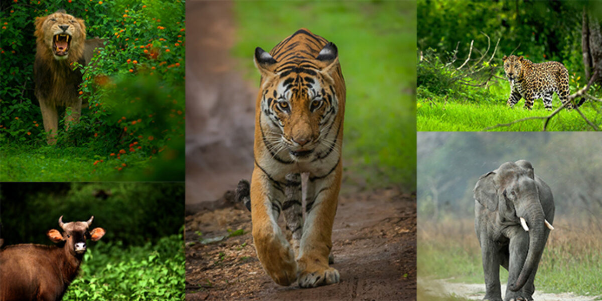
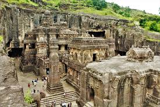

ArtifactsIndian art consists of a variety of art forms, including painting, sculpture, pottery, and textile arts.Rock art of India includes rock relief carvings, engravings and paintings.....
know more

Travel and TourismStanding as proof of a glorious past and excellent craftsmanship, the forts in India are popular tourist attractions today. Spread over the entire country, these forts find mention in important history ...
know more
Folk dancesClassical dance has a deep-rooted relationship with the Natya Shastra where the specific features of each of the Classical dance forms have been mentioned. Folk dance, on the other hand, emerged from the local tradition of the respective state. ...
know more

Indian Cuisine Cuisine differs across India's diverse regions as a result of variation in local culture, geographical location (proximity to sea, desert, or mountains), and economics.Staple foods of Indian cuisine include pearl millet (bājra), rice, ...
know more

FestivalsIndia is a land of festivals, where people from different religions coexist harmoniously. The wide variety of festivals celebrated in India is a true manifestation of its rich culture and traditions. There are many Indian festivals and celebrations,
know more
 Religious Books
Religious BooksHindu texts are manuscripts and voluminous historical literature which are related to any of the diverse traditions within Hinduism. A few of these texts are shared across these traditions and they are broadly considered Hindu scriptures
know more

Music Indian music encompasses numerous genres in multiple varieties and forms which include classical music, folk, rock, and pop. It has a history spanning several millennia and developed over several geo-locations spanning the sub-continent.
know more

Textile and FabricThis section highlights and honours the craftsmanship of the Indian handloom workers, embroiderers, block printers, painters and others who have immensely contributed to build a distinct textile industry for India.
know more
 Indian Flora
Indian Flora The flora of India largely reflect the country's distribution of rainfall. Tropical broad-leaved evergreen and mixed, partially evergreen forests grow in areas with high precipitation
know more

Indian Fauna India is home to several well-known large mammals, including the Asian elephant, Bengal tiger, Asiatic lion, Indian leopard and Indian rhinoceros. Some of these ...
know more

Ajanta Caves The Ajanta Caves are 29 rock-cut Buddhist cave monuments dating from the second century BCE to about 480 CE in the Aurangabad District of Maharashtra state ...
know more
Indian Armed Forces comprise of three divisions – Indian Army, Indian Navy, and the Indian Air Force. Indian Armed Forces are under the management of the Ministry of Defence of the Government of India. Indian Armed Forces comprise of three divisions – Indian Army, Indian Navy, and the Indian Air Force. Indian Armed Forces are under the management of the Ministry of Defence of the Government of India...